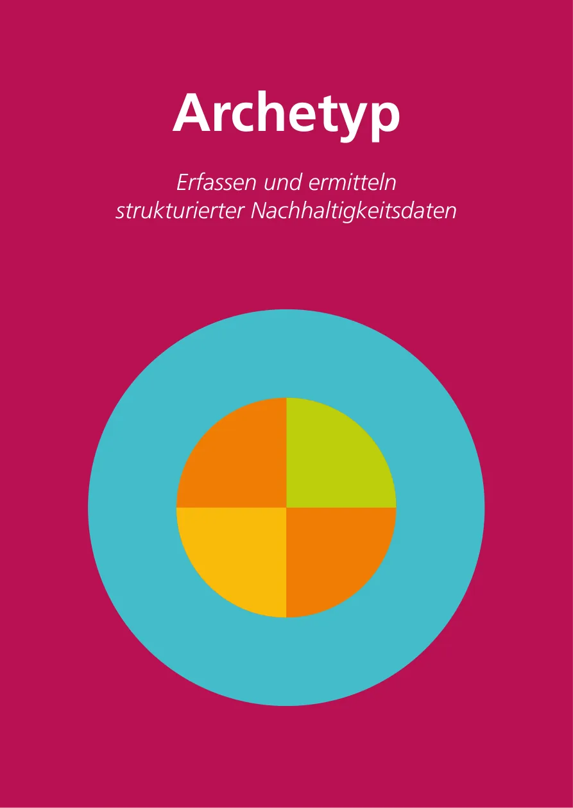
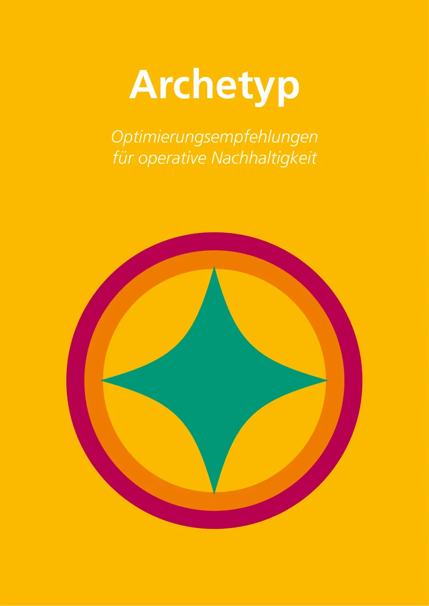
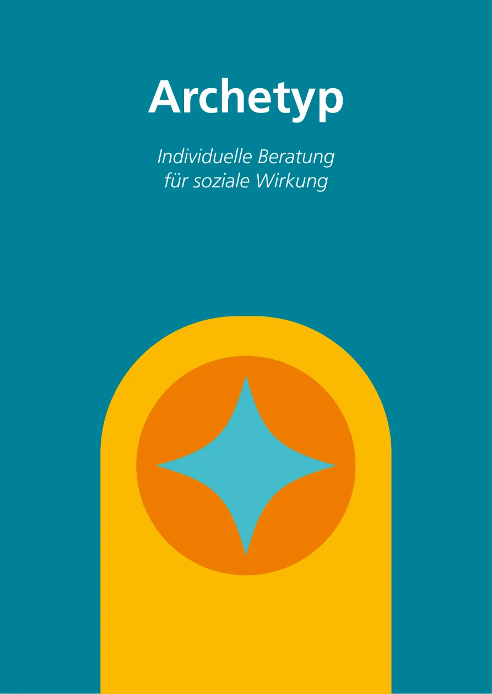
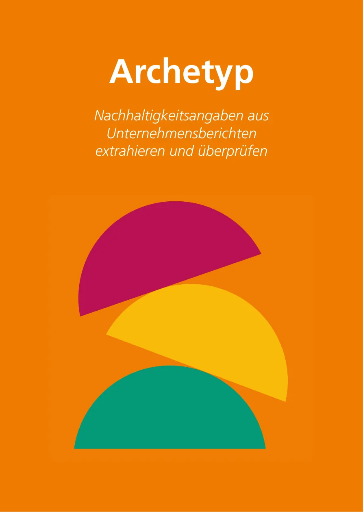
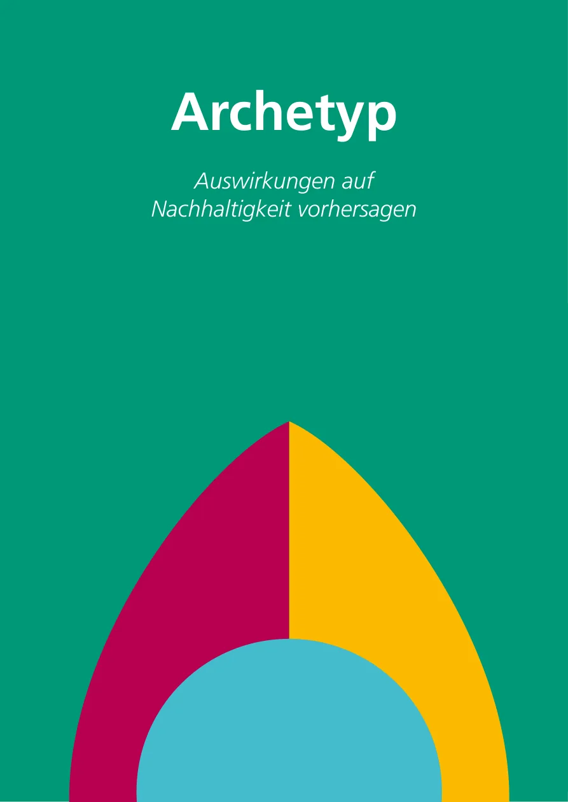
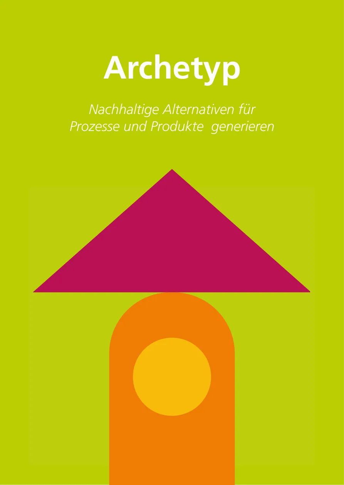
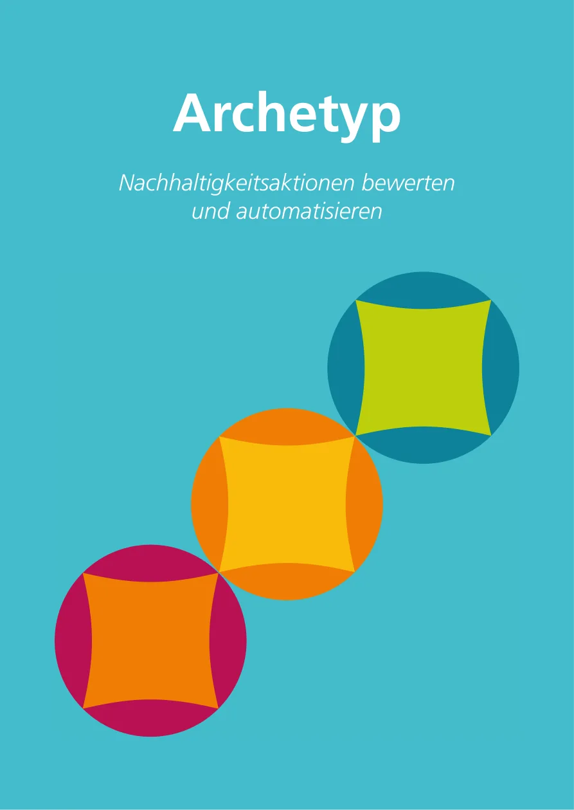
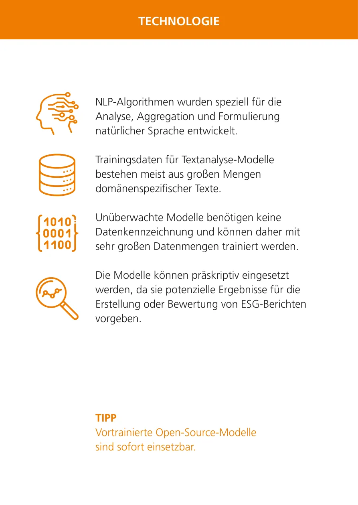
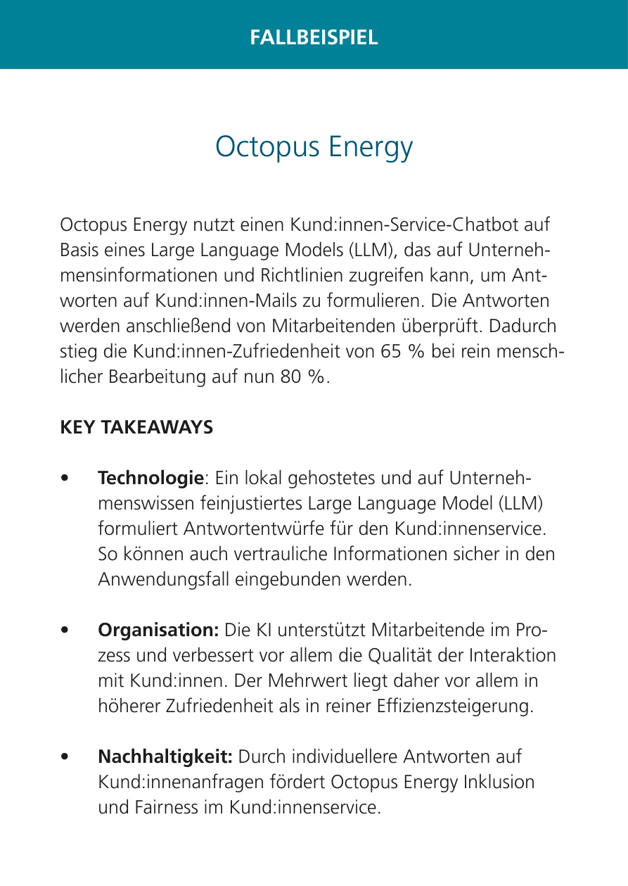

01
Inspiration
Alle Fallbeispiele sichten, die spannendsten markieren und gemeinsam herausfinden, welche Archetypen für Ihr Unternehmen zählen.
- Ergebnis
- Priorisierte Archetypen und erste Ideen
- Wann
- Zu Beginn eines Workshops
Das Kartenset übersetzt KI für Nachhaltigkeit in konkrete Ideen für Ihr Unternehmen – mit 7 Archetypen, 28 Praxisbeispielen und 3 Spielmodi für Workshops vor Ort und online.



Jeder Archetyp ist ein eigenes Deck mit 8 Karten – vom Überblick über Technologie und Organisation bis zu vier echten Fallbeispielen.

ARCHETYP 01 Nachhaltigkeitsangaben aus Unternehmensberichten extrahieren und überprüfen SDG 9SDG 12SDG 13SDG 16 ARCHETYP 02 Erfassen und ermitteln strukturierter Nachhaltigkeitsdaten SDG 11SDG 15 ARCHETYP 03 Individuelle Beratung für soziale Wirkung SDG 11SDG 12
ARCHETYP 04 Auswirkungen auf Nachhaltigkeit vorhersagen SDG 11SDG 12 ARCHETYP 05 Optimierungsempfehlungen für operative Nachhaltigkeit SDG 11SDG 12SDG 15
ARCHETYP 06 Nachhaltige Alternativen für Prozesse und Produkte generieren SDG 8SDG 9SDG 10SDG 12
ARCHETYP 07 Nachhaltigkeitsaktionen bewerten und automatisieren SDG 8SDG 9

Jede Aktivierungsfrage öffnet ein Gespräch darüber, was KI für Nachhaltigkeit in Ihrem Unternehmen leisten kann.
Drei Modi, einzeln oder als kompletter Workshop: erst Orientierung, dann neue Ideen, dann eine belastbare Planung.
Alle Fallbeispiele sichten, die spannendsten markieren und gemeinsam herausfinden, welche Archetypen für Ihr Unternehmen zählen.
Kleingruppen ziehen einen Archetyp, skizzieren 2–3 neue Use Cases für die eigene Organisation und stellen sie in kurzen Pitches vor.
Technische Voraussetzungen und organisatorische Veränderungen klären und Ideen nach Nachhaltigkeitswirkung, Umsetzbarkeit und Geschäftsnutzen bewerten.
Erkenntnisse aus der AI4S-Taxonomie werden zu einer anwendungsorientierten Workshop-Methode.
Eine gemeinsame Sprache für Technik, Management und Nachhaltigkeitsexpertise.
Vorstrukturierte Impulse entlasten – der Kopf bleibt frei für neue Lösungsansätze.
Technische Machbarkeit und Beitrag zu den Nachhaltigkeitszielen werden immer zusammen gedacht.
Teilnehmende treten per Code oder QR-Code bei – Abstimmen und Bewerten in Echtzeit, auch am Smartphone.
Raum eröffnenPrint & Play für den Bürodrucker: vier Karten pro A4-Seite, mit Schnittmarken und Anleitung.
PDF herunterladenAlle Karten als Vorlage für Ihr Miro-Board – mit vorbereiteten Flächen für jeden Spielmodus.